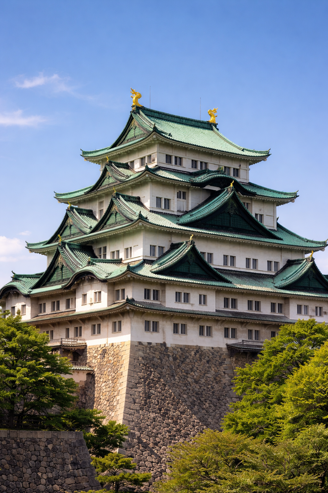

Nagoya
| Nagoya (名古屋市) | |
|---|---|
|  | |
| Pays | Japon |
| Région | Chūbu |
| Préfecture | Aichi |
| Population | 2 320 361 hab. |
Nagoya (名古屋市, Nagoya-shi) est la quatrième plus grande ville du Japon par sa population. Située au centre de l'île de Honshū, sur la côte Pacifique, elle est le chef-lieu de la préfecture d'Aichi. C'est un centre industriel, commercial et culturel majeur du pays.
Histoire
Au cours de l'époque d'Edo, Nagoya s'est développée comme une ville-château sous le clan Tokugawa. Le château de Nagoya, construit en 1612, était l'un des plus importants du Japon médiéval. La ville a été presque entièrement détruite par les bombardements durant la Seconde Guerre mondiale, mais a été reconstruite selon un plan d'urbanisme moderne avec de larges boulevards.
Tourisme et monuments
Nagoya offre de nombreux sites historiques et modernes :
- Le Château de Nagoya (Nagoya-jō) : Célèbre pour ses kinshachi (shachihoko dorés) sur le toit, il est le symbole de la ville.
- Le sanctuaire Atsuta : L'un des sanctuaires shinto les plus sacrés du pays, abritant l'épée Kusanagi no Tsurugi.
- Osu Kannon : Un temple bouddhiste populaire situé dans un quartier commerçant animé rempli de boutiques traditionnelles et modernes.
- Le musée SCMaglev et Railway Park : Un musée dédié au train à sustentation magnétique et à l'histoire des chemins de fer japonais.
Cuisine locale
Nagoya possède une identité culinaire unique au Japon, souvent appelée Nagoya Meshi. Le miso rouge (hatchō miso) est un ingrédient fondamental de la cuisine locale.
- Tebasaki : Des ailes de poulet frites avec une sauce poivrée et sucrée, très populaires dans les izakaya.
- Miso-katsu : Une escalope de porc panée (tonkatsu) servie avec une riche sauce au miso rouge.
- Hitsumabushi : Une façon particulière de servir l'anguille grillée (unagi) en trois étapes distinctes.
- Kishimen : Des nouilles udon plates et larges, servies dans un bouillon clair.
Transports
La ville est un nœud de transport vital au Japon. La gare de Nagoya est l'une des plus grandes gares du monde en termes de superficie. Le Shinkansen (train à grande vitesse) relie Nagoya à Tokyo en seulement 1h40, faisant de la ville une destination facilement accessible pour les voyageurs internationaux.